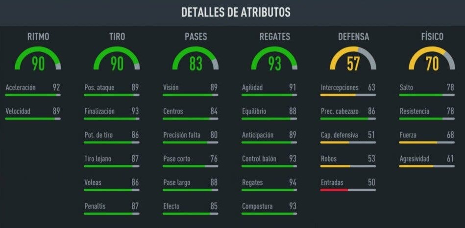
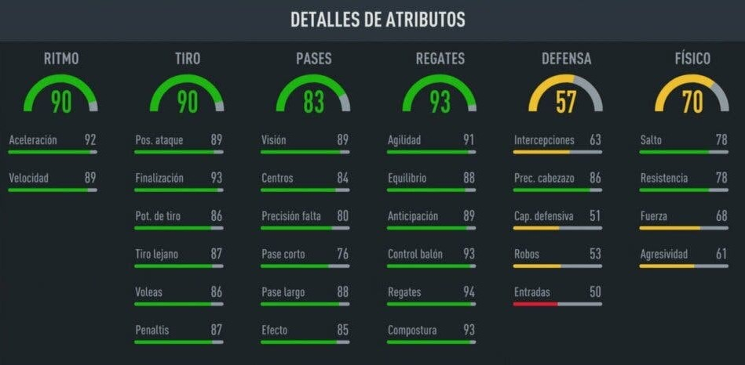
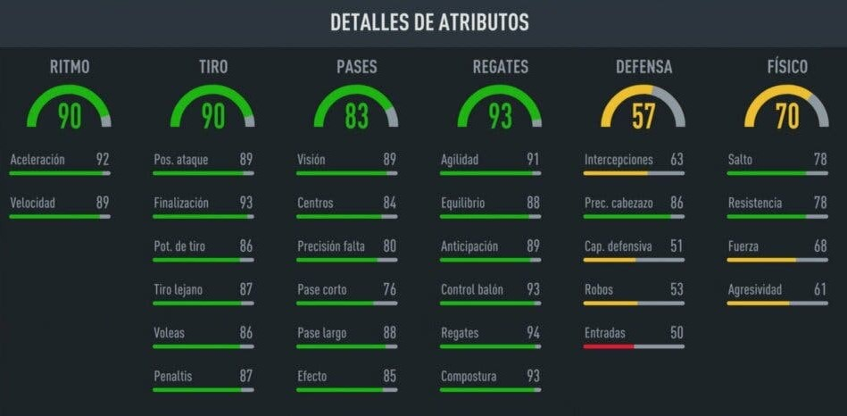

L'inspecteur Banane était un personnage hors du commun. Avec sa silhouette élancée et son apparence jaune vif, il était immédiatement reconnaissable dans les rues animées de la ville. Son flair pour les mystères était inégalé, et il résolvait les affaires les plus épineuses avec une perspicacité et une ingéniosité surprenantes. Armé de son monocle et de sa canne, il arpentait les ruelles sombres à la recherche d'indices, prêt à dévoiler la vérité sous-jacente derrière chaque énigme. L'inspecteur Banane était une légende dans le monde du crime, toujours prêt à éplucher les détails pour dévoiler la vérité, même si cela signifiait plonger au cœur d'une affaire aussi complexe qu'un nœud de banane.
